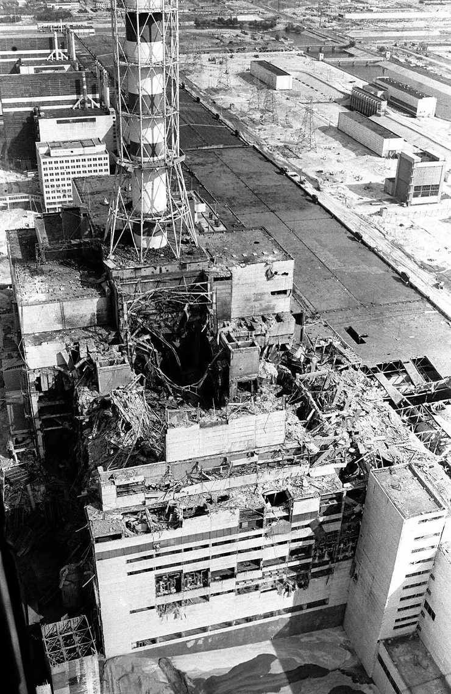

Blog Entry #1 · Due Friday, August 28, 2026
Kicking Off Senior Year
Over summer vacation, I went to UCLA for a summer camp, it was very fun because I got
to stay in the dorms and I learned a buncha stuff. What I'm most excited for this year
in engineering is making my capstone project next semester, but in general I'm most
excited for applying for college.
Blog Entry #2
Engineering Ethics: The Code of Hammurabi
I think that the code of Hammurabi is unfounded because it does not consider extraneous
factors that could influence the failure of a design. For example, if I designed a
bridge with a safety factor of 4 and tested it for all normal and expected extreme
conditions, and then lightning struck the same spot on the bridge so many times that it
melted and someone died because of it, I don't think I should be at fault for that.
Blog Entry #3
Human-Designed Failure: The Chernobyl Disaster

Reactor 4 at the Chernobyl Nuclear Power Plant, following the April 1986 meltdown.
The Chernobyl reactor failure was the most disastrous meltdown event in history. A
positive void coefficient (more steam = more reactions) caused the reactor to enter a
feedback loop: the reactor heated up, more steam was generated, and the reaction sped
up, and then more steam was added from the sped-up reaction. The other serious defect
that caused the meltdown was the emergency control rods having graphite tips, so when
the engineers activated the emergency shutdown system, the graphite ignited and caused
a massive energy surge. I found it interesting because it has the word nuclear in it.
The internal reactor was completely obliterated and the surrounding structures were
damage. The radiation released killed ~30 people, and the area is still relatively
uninhabited. It was certainly a human-designed failure, as it was completely man-made
and had multiple design flaws.